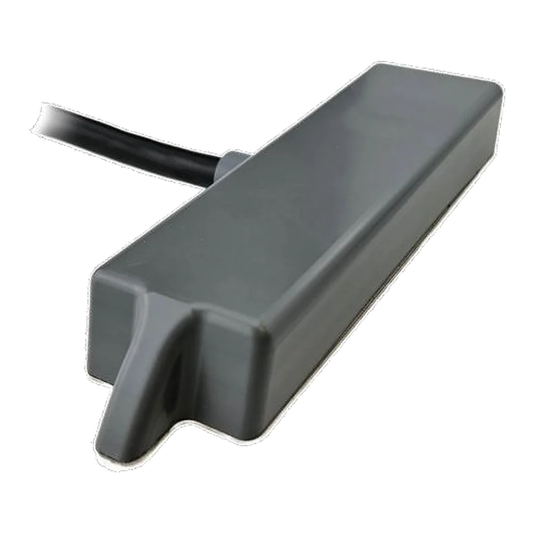
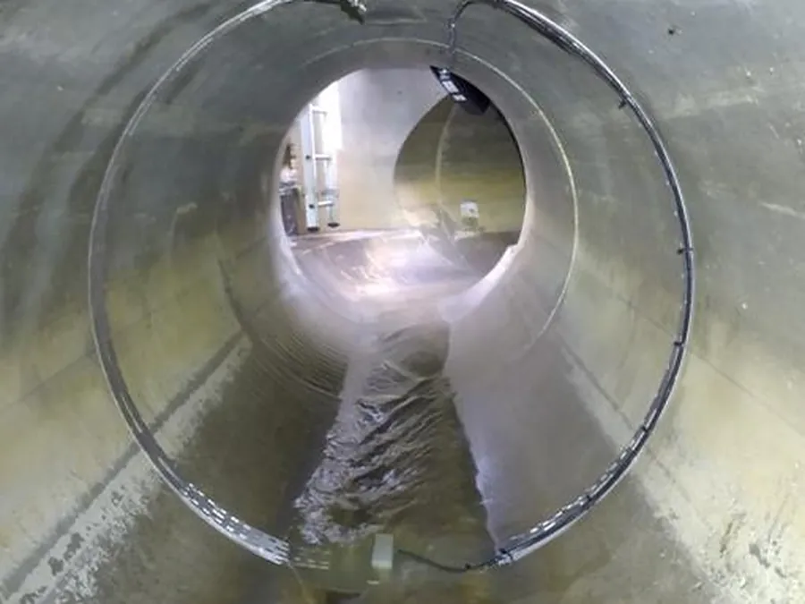

Débitmètres · Hauteur-vitesse
BELUGA A/VDébitmètre Doppler avec capteur de niveau intégré
Vitesse Doppler, niveau par pression et calcul du débit dans un capteur ultra-compact. Il se raccorde directement à un automate ou à un enregistreur autonome en Modbus, sans transmetteur intermédiaire.
- Vitesse
- − 2 à + 6 m/s
- Niveau
- 0 à 2 m, ± 0,25 % PE
- Hauteur minimale
- 2 cm
- Communication
- RS485 Modbus ASCII ou RTU
Idéal pour
- Autosurveillance
- Diagnostic réseau
- Déversoirs d’orage
- Enregistreur autonome
- Raccordement sur automate
LeasingDisponible à l’achat ou en leasing, par mensualités. Comment ça marche
Points forts
La dernière évolution du BELUGA : hauteur, vitesse et débit sortent d’un seul capteur.
- Tout-en-unCapteurs de vitesse, de niveau et de température dans un boîtier de 153 × 43 × 22 mm.
- Débit calculé seulSans transmetteur : hauteur, vitesse et débit lus directement en Modbus.
- Faibles niveauxLa fonction Smart Velocity améliore le calcul du débit sous 2 cm d’eau.
- Fonctionne en refoulementMesure de vitesse de − 2 à + 6 m/s.
- Option 4-20 mAUne sortie à affecter au débit ou à la vitesse, pour les installations sans Modbus.
- Faible consommation54 mA sous 12 V : adapté aux enregistreurs autonomes.
Principe de mesure
La vitesse est mesurée par effet Doppler : le capteur émet une onde continue à 1 MHz et analyse le spectre des fréquences renvoyées par les particules en suspension.
La hauteur d’eau est mesurée par un capteur de pression différentielle, ramené à la pression atmosphérique par le câble. Le capteur convertit la hauteur en section mouillée selon la forme du conduit et calcule le débit.
- Cellule de pression remplaçable, membrane inox
- Câble avec mise à l’atmosphère protégée par dessiccateur
- Configuration et visualisation par logiciel
Applications
Pour les liquides chargés en particules, en poste fixe ou en campagne de mesure.
- AutosurveillanceRaccordé en Modbus à un enregistreur autonome ou à l’automate de supervision.
- Diagnostic des réseauxAssocié à l’enregistreur LOG’R, conçu pour lui, pour des campagnes de plusieurs semaines.
- Déversoirs d’orage et rejetsMesure en surverse, refoulement compris.
- Station d’épuration et industriesComptage sur canal ou conduit partiellement rempli.
Caractéristiques
Mesures de vitesse, de niveau et de température intégrées au capteur.
| Méthode | Ultrasonique Doppler, analyse spectrale, 1 MHz |
|---|---|
| Gamme | − 2 à + 6 m/s |
| Précision | ± 1 % ± stabilité du zéro, selon conditions hydrauliques |
| Stabilité du zéro | ± 0,01 m/s |
| Résolution | 0,001 m/s |
| Hauteur d’eau minimale | 2 cm |
| Méthode | Pression différentielle, mise à l’atmosphère protégée par dessiccateur |
|---|---|
| Gamme | 0 à 2 m |
| Précision | ± 0,25 % de la pleine échelle |
| Résolution | 1 mm |
| Surcharge maximale | 25 m |
| Température de l’eau | − 40 à + 80 °C |
| Communication | RS485, Modbus ASCII ou RTU |
| Option | 1 sortie 4-20 mA, débit ou vitesse |
| Alimentation | 5 à 26 Vdc, 54 mA sous 12 V |
| Boîtier | PVC haute résistance aux chocs, IP68, 153 × 43 × 22 mm, 0,26 kg |
| Câble | PUR, 10, 20 ou 30 m |
Téléchargements
Questions fréquentes
Les questions que nous posent le plus souvent les exploitants et les bureaux d’études.
Quelle différence avec le BELUGA ?
Le BELUGA A/V intègre sa propre mesure de niveau par pression : il fournit hauteur, vitesse et débit sans capteur de niveau séparé. Le BELUGA mesure la vitesse et reçoit la hauteur d’un autre capteur.
Faut-il un transmetteur ?
Non. Il se raccorde directement à l’automate ou à un enregistreur disposant d’une entrée RS485 Modbus. Sans Modbus, l’option 4-20 mA fournit le débit ou la vitesse.
Mesure-t-il à très faible hauteur d’eau ?
La vitesse est mesurée dès 2 cm. En dessous, la fonction Smart Velocity améliore le calcul du débit.
Avec quel enregistreur l’utiliser en campagne ?
Le LOG’R a été conçu pour lui : paramétrage et récupération des données en Wi-Fi, autonomie de plusieurs semaines.